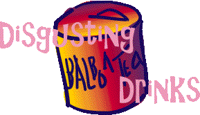

DISGUSTING DRINKS Disgusting Drinks

A little-known but fascinating field of experience is that of drinking really disgusting soft drinks. And I'm not talking about lukewarm Coke here, I'm talking about the real stuff, the stuff that makes your teeth melt and your throat scream for mercy. I discovered the world of disgusting drinks on a trip to Italy two years ago, and once I was in it, there was no way back. Nowadays, wherever I go, I simply have to spend some of my money every day on extremely gross soft drinks.
In Italy, I lost my soft drink virginity sitting beside a canal in Venice, sipping a can of "Balboa Tea". Our editor Joel was with me, drinking an equally horrifying drink, whose name unfortunately has been lost to future generations. We sat there in the moonlight, a blanket with cheese and bread spread out before us, looking forward to a nice and sophisticated evening. God knows why we had bought the drinks, maybe we were thirsty, even though Venice wasn't very hot at that time. We had our first sip at the same time, and our faces were both instantly contorted, as if we were victims of some exquisite torture. Both of us were yelling, eyes wide with fright, and we both offered each other a sip, each of us convinced that the drink he was having surely was the most dreadful one. When we traded cans, we were in for another shock.
The task of finishing the cans was Herculean. We laughed, we cried, we sat there for hours. We almost forgot to eat the cheese and the bread. But at last we made it, and headed for our hotel, having glimpsed something beyond our everyday existence.
The next day something strange happened. For some reason, we both wanted to go out and buy more disgusting drinks. A habit was being established. We went out and sampled the disgusting drinks that Italy had to offer. Very quickly, we learned to control ourselves, to drink with dignity. We discovered that the pain was soon replaced by an exquisite, although maybe a bit perverse, pleasure. We saw that there aren't many things in the world that can compare to downing a revolting, 100% synthetic beverage that tastes like plastic. It gave us a kind of masochistic pleasure. During the days in Italy, we literally spent our last bucks on disgusting drinks.
From that day on, our tastes grew more and more refined. We began to really appreciate the pleasure that the drinks gave us, soon forgetting that there was even supposed to be an element of discomfort involved. We travelled to the Netherlands, The United States and Great Britain, always in search of new magic liquids. We also discovered that our home country, Sweden, was richer in this area than we had previously thought. After each night out we would go grab a new kind of synthetic beverage. The only problem was that we were getting blasÚ. The drinks we had thought to be revolting in the beginning soon began to seem tame, even tasty (God forbid!). Don't get me wrong, I have been known to have a tasty drink once in a while, but let's face it - when you feel the urge for a disgusting drink, you want a disgusting drink - and nothing else.
Now I am in China, and I must say I am disappointed. I came here with high hopes; since everything that's made for the mainland market here is - to be blunt - pure junk, I was hoping to find something really nasty to pour down my throat. Surprisingly, I have yet to find EVEN ONE disgusting drink! All they have is pretty decent Coke and Fanta rip-offs, and some coconut milk drinks and what have you, all far too tasty for me. If you want disgusting stuff here, you'd better buy coffee, bread, chocolate and the like. But that's not my cup of tea.
Friends from all around the world, give disgusting drinks a try! It might change your life. This hobby is not for everyone, you have to have the right kind of disposition and taste buds. But still, try it! You might get lucky!
Mikael Huss